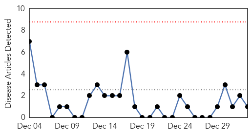
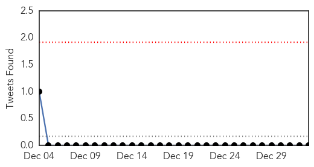
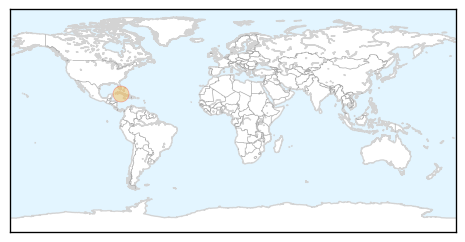

Cholera
30-Day Web Trend
0 alerts, 0 warnings

30-Day Twitter Trend
0 alerts, 0 warnings

Article Locations
Article Confidences

Top Articles:
Top Tweets:
-
No tweets found for Jan 02, 2015
Ebola
30-Day Web Trend
0 alerts, 0 warnings

30-Day Twitter Trend
0 alerts, 0 warnings

Article Locations

Article Confidences
Top Articles:
- 1.000
- Cuban Doctor Seeks Return to Africa After Surviving Ebola
- 1.000
- 20,000 cases on, Ebola mysteries remain
- 1.000
- World Health Organization reports 7,905 Ebola deaths
- 1.000
- The most from the coast
- 1.000
- Ebola spreads in Sierra Leone as global cases top 20,000
- 1.000
- Nearly 40 years and more than 20,000 cases in, many Ebola mysteries remain
- 1.000
- Ebola exposed flaws in nation’s ability to respond to dangerous new germs
- 1.000
- Largest Ebola outbreak ever reveals truths about the mysterious, deadly disease
- 1.000
- 2014 under review - Ebola outbreak
- 1.000
- Texas Matters: The Lessons Of Ebola
- 1.000
- EDITORIAL: No shortage of health dangers
- 0.999
- Another View: The world must prepare for this year's health crisis
- 0.999
- Korean aid worker in Sierra Leone to be sent to Germany for Ebola test
- 0.999
- UN tally of Ebola-linked deaths tops 8,000
- 0.999
- Sierra Leone's Kailahun: from Ebola hotspot to zero infections
- 0.999
- Health Ministry says one of the two Ebola Treatment Centres is completed
- 0.999
- Italian doctor cured of Ebola may return to Sierra Leone
- 0.999
- Doctor declared Ebola-free in Rome
- 0.999
- Over 20,000 people contracted Ebola in 2014: WHO
- 0.999
- Doctor declared #Ebola-free in Rome
- 0.998
- Borneo , Malaysia, Sarawak Daily NewsBorneoPost Online
- 0.998
- Ebola death toll nears 8,000: WHO
- 0.998
- The UN Must Investigate Ebola Outbreak in West Africa
- 0.997
- Korean health worker being monitored for Ebola – The Korea Times
- 0.997
- Second Ebola Test Negative for Nurse Being Treated in Kelowna
- 0.997
- UK passengers on Ebola flights traced
- 0.997
- Editorial: Winning the war against Ebola
- 0.996
- Where Could Ebola Strike Next? Scientists Hunt Virus In Asia
- 0.996
- Ireland to fund Sierra Leone's ambulance, burial teams to fight Ebola
- 0.996
- Relentless spread of Ebola continues with Sierra Leone worst hit
- 0.996
- Over 160 million euros for the fight against Ebola - Sierra Leone
- 0.996
- Where Could Ebola Strike Next? Scientists Hunt Virus In Asia
- 0.996
- Italian Ebola patient released from hospital in Rome
- 0.995
- Gov't assures of quick containment of ebola in case of outbreak
- 0.995
- Ebola death toll nears 8,000 – WHO
- 0.995
- CORRECTED-Italian Ebola patient released from hospital in Rome
- 0.994
- WATCH: B.C. nurse suspected of having Ebola impressed by hospital treatment
- 0.993
- FDA To Test San Diego Company's Ebola Treatment Device
- 0.992
- Ebola tops health news, local and worldwide, in 2014
- 0.992
- Where could Ebola strike next? Scientists hunt virus in Asia
- 0.991
- Courage gets B.C. face in Ebola fighter Patrice Gordon
- 0.991
- Penn doctor going back for second tour fighting Ebola in Africa
- 0.991
- ISIS Militants Have Contracted Ebola
- 0.991
- Gulf Daily News World News Ebola fight may be won this year says UN
- 0.991
- Ebola Screenings Should Be Improved
- 0.991
- Week of prayer and fasting to help combat Ebola surge in Sierra Leone
- 0.990
- Fear Hampering Ebola Fight
- 0.990
- South Korean suspected of Ebola to be sent to Germany
- 0.990
- Local Ebola volunteers: Confronting crisis is ‘the right thing’
- 0.989
- First Ebola Victim May Have Been Infected by Bats
Showing top 50 articles...
Top Tweets:
- 0.922
- Ebola Update: 20,206 confirmed, probable & suspected cases reported in 3 most affected countries, and 7,905 deaths. EbolaResponse
- 0.792
- RT: Assessment antivirals Ebola started today WestAfrica. With public health,community engagement,diagnostics,TX,vaccines E…
- 0.759
- Malaria killing thousands more than Ebola in West Africa http://t.co/9MQumOjShT
- 0.756
- RT: Ebola Closes schools:My ebook in response to awful effects of Ebola on communities http://t.co/FbTd4Ku729…
- 0.702
- Most intense Ebola transmission in West Africa reported in western Sierra Leone says http://t.co/Lw6SKCcR79 http://t.co/jBv0QHsvH7
- 0.680
- Graphic via shows timeline and spread of Ebola across Africa http://t.co/bxSrHnyRnG
- 0.676
- Terrific MT: Compelling, infuriating Ebola ticktock from. http://t.co/7m5CCA2GbS
- 0.616
- RT: Where Could Ebola Strike Next? Scientists Virus Hunt In Asia http://t.co/E4S50jBJXq
- 0.608
- Collecting accurate data on the Ebola outbreak proves to be a challenge in affected areas via http://t.co/xrsF336HQs
- 0.563
- Scottish nurse enters "critical" phase of Ebola treatment http://t.co/iagtVAF5Ke
- 0.560
- RT: Experimental drug for British Ebola nurse who had been working in Sierra Leone http://t.co/n78vWcw7Ya http://t.co/S81ZBGlfDp
- 0.556
- RT: 837.5% more people have died from malaria than ebola in Guinea this year http://t.co/SeSYKEtXpw
- 0.548
- .@NYTimes infographic shows Ebola cases treated outside Africa. Want to see: list of experimental drugs each got. http://t.co/qCb9R4ra52
- 0.515
- Liberia had zero confirmed Ebola cases on 31 Dec & is moving to natl avg of just over 3 cases/day. EbolaResponse http://t.co/rXihLevcol